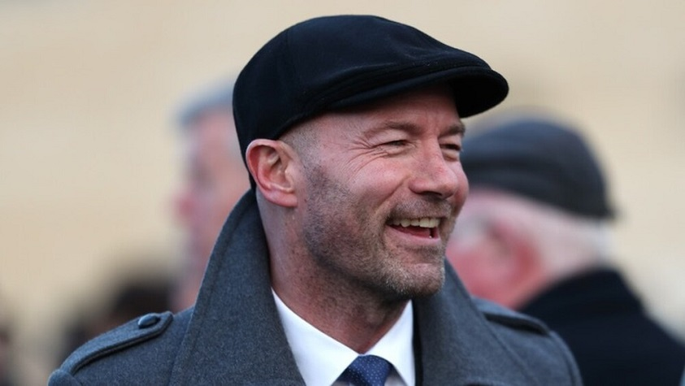

Career and Coaching about Alan
His first match in charge ended in a 2–0 defeat against Chelsea at St. James’ Park. On 11 April, Newcastle earned their first point under Shearer with a 1–1 draw with Stoke City at the Britannia Stadium with Andy Carroll scoring a late equalizing goal. After a defeat to Tottenham Hotspur and a draw against Portsmouth, his first win for Newcastle came in a 3–1 victory over Middlesbrough that lifted Newcastle from the relegation zone.
On the eve of the final day of the season on 24 May, where all fixtures are played simultaneously, Newcastle faced the prospect of being relegated to the Championship, along with Hull City, Middlesbrough and Sunderland, which would end their 16 year unbroken spell in the Premier League. After losing 1–0 at Aston Villa with Damien Duff scoring an own goal, Newcastle were relegated with local rivals Middlesbrough, joining West Bromwich Albion whose relegation had been confirmed in previous weeks, while Sunderland and Hull City survived. Shearer’s eight games yielded only five points out of a possible twenty-four.
Shearer did not get the manager’s job on permanent basis. Chris Hughton stepped up from the coaching staff to take charge of the quest to get Newcastle back into the Premier League, which was achieved at the first attempt as Newcastle finished top of the Championship in 2009–10.
Despite Newcastle looking like good bets for survival with the halfway point of the 2010–11 Premier League campaign looming, Hughton was sacked on 6 December 2010 and this sparked speculation that Shearer would be re-appointed as manager of the club. However, Newcastle’s directors said that they were looking for a manager with more top flight experience and Shearer had ruled himself out of the running. Alan Pardew eventually took over the role.
Post Newcastle United
On 14 June 2011, BBC Sport Wales reported the Shearer had held talks with Championship club Cardiff City over the vacant manager job. Shearer commented the next day that, "unfortunately, those talks were unsuccessful on this occasion."